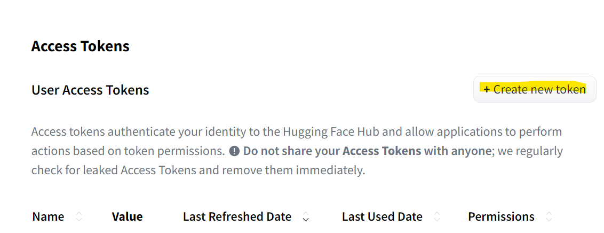

Guide: GitHub and Hugging Face Sign-up
1. GitHub Sign-up
- Open the GitHub website: https://github.com
- Click on "Sign up" in the upper right corner.

- Enter your university email address.
- Create a password and choose a username.
- Follow the prompts to create your personal account.
- During sign up, you'll be asked to verify your email address. Without a verified email address, you won't be able to complete some basic GitHub tasks, such as creating a repository.
2. Hugging Face Sign-up with GitHub Account
- Visit the Hugging Face website: https://huggingface.co
- Click on "Sign up" in the upper right corner.
- On the sign-up page, you'll see a form with the following fields:
- Click on the "Next" button.
- Complete your account. You can also connect the account with GitHub by entering your GitHub username.

- After completing the sign-up process, you can log in to Hugging Face using your email address and password.
3. Token Creation on Hugging Face
- Log in to your Hugging Face account.
- Click on your profile name in the upper right corner and select "Settings".
- Choose "Access Tokens" from the left menu.

- Click on "Create new token".
- Enter a name for your token and select the desired permissions.
- Click on "Create".
- Copy the generated token and store it securely. It will only be shown once.